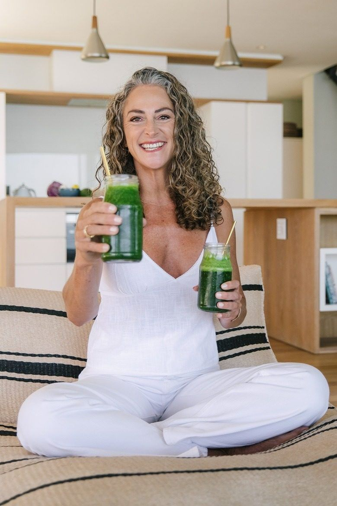

A different kind of health conversation
I'm Nicky Taylor, a passionate nutritional therapist dedicated to empowering women through root-cause nutrition therapy. I work with women navigating gut health, hormonal imbalances, menopause, and more, providing personalized support at every stage of their journey.
My journey into nutrition therapy began after experiencing my own health challenges. I realized the power of personalized nutrition and was inspired to help others uncover the underlying causes of their symptoms. My holistic approach focuses on sustainable, long-term health improvements rather than temporary fixes.
At Nicky Taylor Nutrition, I promise to listen deeply, educate, and support you in taking charge of your health. Together, we will create a tailored plan that respects your unique body and lifestyle, helping you achieve lasting wellness and vitality.
Our Services
Tailored programmes and one-to-one support designed around you — not a generic protocol.
Gut Health
Address IBS, SIBO, and other digestive issues with personalized plans to restore your gut's balance and overall well-being.
Hormonal Imbalances
From PCOS to thyroid dysfunction, receive customized support to harmonize your hormones and enhance your health.
Chronic UTIs
Break the cycle of misdiagnosis with in-depth analysis of your microbiome and immune function for effective solutions.
Weight & Metabolism
Achieve sustainable weight management by understanding your metabolism and relationship with food, without diet culture constraints.

General Wellbeing
Boost energy, improve sleep, and clear brain fog with personalized strategies that promote true wellness.
Gallery

Client Stories
"After years of being told my bloating and fatigue were 'just stress', Nicky finally gave me real answers. Within three months I felt like myself again. Her approach is thorough, compassionate, and genuinely life-changing."— — Sarah M. | Gut Health Programme, ★★★★★
"I came to Nicky struggling with perimenopause symptoms I didn't even realise were related to nutrition. Her knowledge is extraordinary, and her support felt deeply personal. I cannot recommend her highly enough."— — Claire H. | Menopause Support, ★★★★★
"Dealing with SIBO was exhausting and isolating. Nicky made me feel heard from the very first session. Her personalised plan was practical, clear, and it worked. I'm now free from symptoms I thought I'd have forever."— — Emma T. | SIBO Recovery, ★★★★★
Contact Us
We'd love to hear from you — reach out to us anytime.